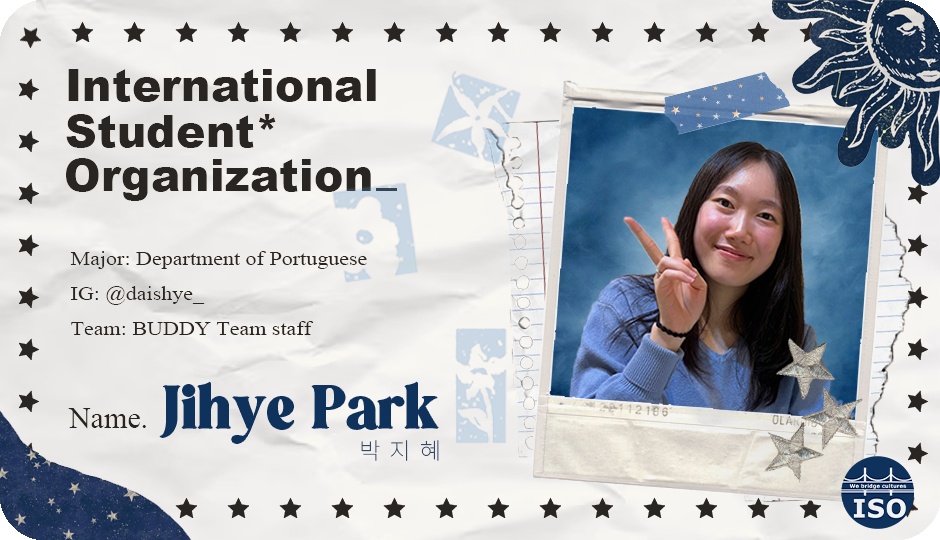
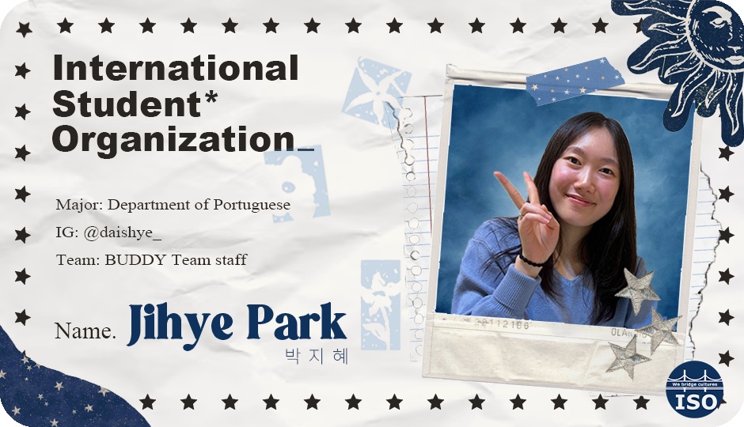

Group 8
 

My Hobby
Exercise: I’ve enjoyed many types of exercise since childhood, like ballet, inline skating, yoga, swimming, and skiing. While studying in Portugal, I tried Brazilian Jiu-Jitsu. Exercise helps me clear my mind and relieve stress.
Cooking: I enjoy making pasta and experimenting with new recipes, like salmon steak with potatoes. Cooking makes me feel like I’m taking good care of myself.
Speaking foreign languages: I speak Korean, English, and Portuguese. My personality shifts with each language—when I speak English, I feel more outgoing. I also enjoy hearing new ideas and discussing unique topics through foreign languages.
운동: 어릴 때부터 다양한 운동을 즐겨 했어요. 발레, 인라인스케이트, 요가, 헬스, 수영, 아이스스케이트, 스키, 배드민턴 등 여러 가지를 해봤죠. 포르투갈에서 1년 동안 교환학생으로 지내는 동안에는 주짓수를 배웠어요. 운동을 하면 머리가 맑아지고 스트레스가 풀려서 정말 좋아해요.
요리: 주로 파스타 요리를 자주 하고, 가끔 새로운 요리도 시도해요. 최근에는 감자를 곁들인 연어 스테이크를 만들어 먹었어요. 내가 먹을 재료를 직접 고르고 요리하는 과정에서, 스스로를 정성스럽게 돌본다는 느낌이 들어서 좋아해요.
사람들과 외국어로 얘기하기: 저는 한국어, 영어, 포르투갈어를 할 줄 알아요. 재미있는 건, 언어에 따라 제 성격이 조금씩 달라진다는 거예요. 예를 들어, 영어로 대화할 때는 좀 더 활발하고 적극적인 성격이 되는 것 같아요. 또 외국어로 이야기하면 평소에 접하기 어려운 주제가 나오거나 새로운 의견을 들을 기회가 많아서 그 점이 참 좋아요.
Photo
옥스포드 갔을 때 찍은 사진. 평화롭고 아름다운 풍경이라 찍음.

NICE TO MEET YOU
Let's have a great time together!
같이 즐겁고 신나는 시간 보내요! 😉